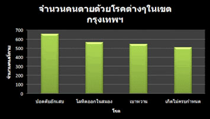
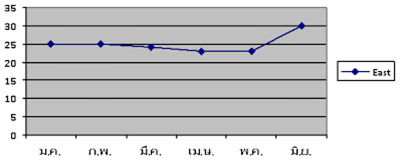
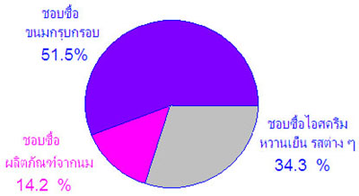
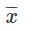
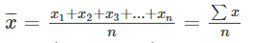
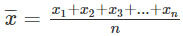
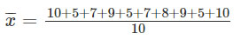
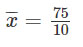
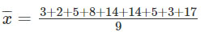
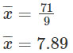

3.1ข้อมูลและการนำเสนอข้อมูล
การเก็บรวบรวมข้อมูลและการนำเสนอข้อมูล
ข้อมูล หมายถึง ข้อเท็จจริงเกี่ยวกับสิ่งต่าง ๆ ที่เราสนใจที่จะศึกษา ข้อมูลอาจเป็นตัวเลขหรือข้อความซึ่งได้มาจากการเก็บรวบรวมโดยวิธีใด ๆ ก็ได้ เช่น โดยการสัมภาษณ์ โดยการนับ โดยการลงทะเบียน หรือโดยการคัดลอกข้อมูลที่มีผู้เก็บรวบรวมไว้แล้ว เราจำแนกข้อมูลได้ดังนี้
- ข้อมูลเชิงประมาณ คือ ข้อมูลที่เป็นตัวเลขที่ใช้แสดงปริมาณของสิ่งต่าง ๆ ที่ทำการศึกษา ซึ่งวัดออกมาเป็นจำนวนที่สามารถนำไปคำนวณ หรือเปรียบเทียบได้ เช่น อายุ ความสูง น้ำหนัก คะแนน
- ข้อมูลเชิงคุณภาพ คือ ข้อมูลที่ใช้อธิบายลักษณะ สมบัติ หรือสภาวการณ์ของสิ่งต่าง ๆ ที่ทำการศึกษาในเชิงคุณภาพ เช่น เพศ ความเห็น ความเชื่อ ความสวย
นำเสนอข้อมูล
การนำเสนอข้อมูล เป็นการนำเสนอข้อมูลที่เก็บรวบรวมมาจากแหล่งต่าง ๆ ซึ่งยังไม่เป็นระบบ มาจัดเป็นหมวดหมู่ให้มีความสัมพันธ์เกี่ยวข้องกันตามวัตถุประสงค์ เพื่อสะดวกแก่การอ่านทำความเข้าใจ การวิเคราะห์ และแปลความหมายเพื่อประยุกต์ใช้ในชีวิตประจำวันต่อไป โดยแบ่งเป็น 2 แบบใหญ่ ๆ คือ
- การนำเสนอแบบมีแผน เป็นการนำเสนอข้อมูลที่มีกฎเกณฑ์
- การนำเสนอแบบไม่มีแบบแผน เป็นการนำเสนอข้อมูลที่ไม่มีกฎเกณฑ์
3.1.1การนำเสนอข้อมูลในรูปตาราง
การเขียนตารางนำเสนอข้อมูล มีหลักการ คือ จัดข้อมูลไว้ให้อ่านง่าย นำไปใช้สะดวกและมีรายละเอียดข้อเปรียบเทียบต่างๆ ให้เห็นโดยเด่นชัด
การอ่านตารางนำเสนอข้อมูล ก็ต้องดูชื่อตารางว่าแสดงถึงเรื่องอะไร มีแหล่งที่มาจากไหน และให้ความหมายของข้อมูลในช่องต่างๆอย่างไร
การนำเสนอข้อมูลในรูปตาราง
การนำเสนอข้อมูลในรูปตารางเป็นการจัดข้อมูลให้เป็นระเบียบ สามารถดูรายละเอียดและข้อเปรียบเทียบที่ต้องการได้ง่าย รวมทั้งสามารถนำข้อมูลไปใช้ประโยชน์ในด้านต่างๆได้
ตัวอย่าง จากรายงานของกองเศรษฐกิจการเกษตร เกี่ยวกับเนื้อที่เพาะปลูกถั่วเขียวเป็นรายภาค มีการเพาะปลูก 2545/2547 ปรากฏ ดังนี้
ภาคกลาง มีเนื้อที่เพาะปลูก 201,200 ไร่
ภาคตะวันออกเฉียงเหนือ มีเนื้อที่เพาะปลูก
25,108 ไร่
ภาคเหนือ มีเนื้อที่เพาะปลูก 825,125 ไร่
ภาคใต้ มีเนื้อที่เพาะปลูก 74,830 ไร่
จงนำเสนอข้อมูลในรูปตาราง และตอบคำถามต่อไปนี้
1. ภาคใดมีเนื้อที่เพาะปลูกถั่วเขียวน้อยที่สุด
2. ภาคเหนือมีเนื้อที่เพาะปลูกถั่วเขียวมากกว่าภาคใต้เท่าใด
3. เนื้อที่เพาะปลูกถั่วเขียวทั้งหมดมีค่าเท่าใด
4. ภาคใต้มีเนื้อที่เพาะปลูกถั่วเขียวมากกว่าภาคตะวันออกเฉียงเหนือและมากกว่าเท่าใด
วิธีทำ
|
ภาค |
เนื้อที่เพาะปลูกถั่วเขียว(ไร่) |
|
ภาคกลาง
ภาคตะวันออกเฉียงเหนือ ภาคเหนือ ภาคใต้ |
201,200
|
1. ภาคตะวันออกเฉียงเหนือมีเนื้อที่เพาะปลูกถั่วเขียวน้อยที่สุด
2. ภาคเหนือมีเนื้อที่เพาะปลูกถั่วเขียวมากกว่าภาคใต้ 852,125 – 74,830 = 777,295 ไร่
3. เนื้อที่เพาะปลูกถั่วเขียวทั้งหมดมี 1,153,263 ไร่
4. ภาคใต้มีเนื้อที่เพาะปลูกถั่วเขียวมากกว่าภาคตะวันออกเฉียงเหนือ 49,722 ไร่
3.1.2การนำเสนอข้อมูลด้วยแผนภูมิแท่ง
เป็นการนำเสนอข้อมูลโดยเขียนเป็นรูปสี่เหลี่ยมมุมฉากหลายๆ รูปเรียงกันตามแนวนอนหรือแนวตั้ง แล้วแต่ต้องการ รูปสี่เหลี่ยมมุมฉากแต้ละรูปนั้นมี ด้านกว้างเท่ากัน แต่ด้านยาวจะมีความยาวเปลี่ยนไปตามขนาดของข้อมูล ประโยชน์ก็คือ สามารถแปลความหมายของข้อมูลได้รวดเร็ว ละเอียด และเข้าใจง่าย สามารถเปรียบเทียบกันได้
ตัวอย่าง ตารางแสดงจำนวนคนตายด้วยโรคต่างๆ ในเขตกรุงเทพมหานคร ตั้งแต่เดือนมกราคม ถึง มิถุนายน 2547 เป็นดังนี้
วิธีทำ
|
โรค |
จำนวนคนตาย |
|
ปอดตับอักเสบ
โลหิตออกในสมอง เบาหวาน เกิดไม่ครบกำหนดคลอด |
660
566 548 510 |
จงเขียนแผนภูมิแท่งแสดงข้อมูลในตาราง
วิธีทำ แผนภูมิแท่งแสดงจำนวนคนตายด้วยโรคต่างๆ ในเขตกรุงเทพมหานครตั้งแต่เดือน มกราคม ถึง มิถุนายน 2547
3.1.3การนำเสนอข้อมูลด้วยกราฟเส้น
การนำข้อมูลมาแสดงด้วยกราฟเส้น ทำให้สามารถเปรียบเทียบข้อมูลได้ชัดเจนอีกวิธีหนึ่ง สร้างได้สะดวกและง่าย
ตัวอย่าง จงเขียนกราฟแสดงราคาเฉลี่ยถั่วเหลืองชนิดดีที่เกษตรกรขายได้ ตั้งแต่เดือนมกราคม ถึงมิถุนายน พ.ศ. 2547 หน่วยเป็นบาทต่อกิโลกรัม
|
เดือน |
มกราคม |
กุมภาพันธ์ |
มีนาคม |
เมษายน |
พฤษภาคม |
มิถุนายน |
|
เปอร์เซ็นต์ |
25 |
25 |
24 |
23 |
23 |
30 |
วิธีทำ กราฟแสดงราคาเฉลี่ยถั่วเหลืองชนิดดีที่เกษตรขายได้ตั้งแต่เดือนมกราคมถึงมิถุนายน พ.ศ. 2547
3.1.4 การนำเสนอข้อมูลในรูปแผนภูมิรูปวงกลม
แผนภูมิที่แสดงด้วยรูปวงกลม โดยแบ่งวงกลมออกเป็นส่วนๆ จากจุดศูนย์กลางของวงกลม เป็นการนำเสนอที่ต้องการเปรียบเทียบปริมาณของข้อมูล ซึ่งพื้นที่ในวงกลมแทนปริมาณของข้อมูลต่างๆ นิยมคิดข้อมูลให้อยู่ในรูปร้อยละ
ตัวอย่าง จากการสำรวจโรงเรียนคณิตวิทยาที่เป็นโรงเรียนขนาดใหญ่แห่งหนึ่งเกี่ยวกับร้อยละของนักเรียนที่ ชอบซื้อขนม สามอันดับแรก พบว่านักเรียน
ร้อยละ 51.5 ชอบซื้อขนมกรุบกรอบ
ร้อยละ 34.3 ชอบซื้อไอศกรีมหวานเย็น รสต่าง ๆ
ร้อยละ 14.2 ชอบซื้อผลิตภัณฑ์จากนม
จงนำเสนอข้อมูลด้วยแผนภูมิรูปวงกลม
วิธีทำ อธิบาย เนื่องจากเปอร์เซนต์ทั้งหมด เท่ากับ 100%
และเราทราบอยู่แล้วว่า มุมรอบจุดศูนย์กลาง
ของวงกลมเท่ากับ 360 องศา ดังนั้น 100 % เท่ากับ 360 องศา 1 % เท่ากับ 3.6 องศา
เราก็จะหา องศาของวงกลมออกมาได้
จากโจทย์ กำหนดมาให้นักเรียน
ร้อยละ 51.5 ชอบซื้อขนมกรุบกรอบ ร้อยละ 34.3 ชอบซื้อไอศกรีม หวาน
เย็นรสต่าง ๆ และ ร้อยละ 14.2 ชอบซื้อผลิตภัณฑ์จากนม
ดังนั้น ผลรวมทั้งหมดคือ 51.5 + 34.3 +14.2= 100 %
ต่อไปเราจะทำการคำนวณหาพื้นที่ ของวงกลม ในแต่ละส่วน
100 % คิดเป็นมุมที่จุดศูนย์กลางขนาด 360
องศา
1 % คิดเป็นมุมที่จุดศูนย์กลางขนาด 3.6 องศา
ดังนั้น จะได้ ชอบซื้อขนม กรุบกรอบ 51.5 % = 51.5 x 3.6 =
185.4 องศา
ชอบซื้อไอศกรีมหวานเย็น รสต่าง ๆ 34.3 % = 34.3 x 3.6 = 123.48 องศา
ชอบซื้อผลิตภัณฑ์จากนม 14.2 % = 14.2 x 3.6 = 51.12 องศา
ดังนั้น จากการคำนวณจะได้แผนภูมิรูปวงกลมดังนี้
3.2ค่ากลางของข้อมูล
ค่ากลางของข้อมูล คือ ตัวแทนที่เป็นค่าที่เหมาะสมของข้อมูลชุดหนึ่งๆ ตัวอย่างเช่น นักเรียนชั้นม.3 จำนวน 10 คน มีน้ำหนักตัวดังนี้ คือ 45, 52, 49, 56 ,48 , 61 , 47 , 52 , 57 , 47 ถ้าเราถามว่านักเรียนชั้น ม.3 ห้องนี้โดยทั่วไปแล้วหนักกี่กิโลกรัม เราจะตอบอย่าง ไร เราจะเอาข้อมูลตัวไหนมาตอบ ฉนั้นในการที่เราจะตอบคำถามข้อนี้ได้เราต้องหาค่ากลางของข้อมูล ซึ่งเป็นตัวแทนของข้อมูลมาตอบครับ ในการหาค่ากลางข้อของข้อมูลมีหลายวิธี
ตัวอย่างเช่น
ค่าเฉลี่ยเลขคณิต(Arithmetic mean)
มัธยฐาน (median)
ฐานนิยม (mode)
3.2.1ค่าเฉลี่ยเลขคณิต
ค่าเฉลี่ยเลขคณิต หรือ ค่าเฉลี่ย คือ จำนวนที่ได้จากผลรวมของข้อมูลทั้งหมดหารด้วยจำนวนชุดของข้อมูล
สัญลักษณ์ที่ใช้แทนค่าเฉลี่ยคือ
นั้นคือ
มาดูตัวอย่างที่การหาค่าเฉลี่ยกันครับ ไม่ยากครับ เรื่องนี้ง่ายๆครับ
ตัวอย่างที่ 1 นักเรียนห้องหนึ่งมีจำนวน 10 คน สอบได้คะแนนวิชาคณิตศาสตร์ดังนี้ 10, 5 ,7, 9, 5 ,7, 8, 9, 5, 10 จงหาค่าเฉลี่ยของคะแนนสอบของนักเรียนห้องนี้
วิธีทำ จากสูตร
จะได้ n=10 เพราะข้อมูลมี 10 ชุด หรือว่ามีนักเรียนจำนวน 10 คน นั่นเอง
จะได้
ตัวอย่างที่ 2 จงหาค่าเฉลี่ยเลขคณิตของข้อมูลต่อไปนี้ 3, 2, 5, 8,14, 14, 5 ,3 และ 17
วิธีทำ จากสูตร
จะได้ n=9 เพราะข้อมูลมี 9 ตัว หรือมีข้อมูลอยู่ 9 ชุดนั่นเอง
จะได้
3.2.2มัธยฐาน(median)
กำหนดข้อมูลชุดหนึ่งมาให้ มัธยฐานของข้อมูลชุดนั้น คือข้อมูลที่อยู่ตรงกลางของข้อมูลทั้งหมด โดยต้องเรียงข้อมูลก่อน อาจจะเรียงจากมากไปหาน้อยหรือ เรียงจากน้อยไปหามากก็ได้
ตัวอย่างที่ 1 จงหาค่ามัธยฐานของข้อมูลต่อไปนี้ 4, 5, 7, 4, 8, 8 ,9, 5, 3, 7, 9
วิธีทำ ก่อนที่จะหามัธยฐานของข้อมูลได้ต้องนำข้อมูลมาเรียงกันก่อน อาจจะเรียงจากน้อยไปหามาก หรือ จากมากไปหาน้อยก็ได้ครับ แต่ผมจะเรียงจากนอ้ยไปหามากครับ
3 ,4, 4, 5, 5, 7, 7, 8, 8, 9, 9
จะเห็นว่าข้อมูลที่อยู่ตรงกลางของข้อมูลทั้งหมด คือ 7
ดังนั้นมัธยฐานคือ 7 ครับ ง่ายมากเลยเรื่องนี้
ตัวอย่างที่ 2 จงหาค่ามัธยฐานของ 8 ,7, 9 ,17, 14, 10, 12
วิธีทำ นำข้อมูลมาเรียงกันก่อนครับ จะได้
7, 8 ,9 ,10 ,12, 14, 17
จะเห็นว่าข้อมูลที่อยู่ตรงกลางของข้อมูลทั้งหมด คือ 10
ดังนั้นมัธยฐานคือ 10 ครับ ง่ายมากเลยเรื่องนี้
ตัวอย่างที่ 3 จงหาค่ามัธยฐานของ 8 ,7, 9 ,17, 14, 10, 12,19
วิธีทำ นำข้อมูลมาเรียงกันก่อนครับ จะได้
7, 8 ,9 ,10 ,12, 14, 17,19
จะเห็นว่าข้อมูลที่อยู่ตรงกลางมีสองตัวคือ 10 กับ 12 ดังนั้นในการหามัธยฐานของข้อมูลชุดนี้คือต้องหาค่าเฉลี่ยของข้อมูลสองตัวนี้คือ นำมาบวกกันแล้วหารด้วยสอง จะได้
(10+12)/2
=11
3.2.3 ฐานนิยมของข้อมูล(mode)
ฐานนิยมของข้อมูล คือ ข้อมูลที่มีความถี่สูงสุด หรือพูดง่ายๆก็คือข้อมูลที่ซ้ำกันมากที่สุด
ยกตัวอย่างเช่น คะแนนสอบวิชาคณิตศาสตร์ของนักเรียนชั้นมัธยมศึกษาปีที่ 3 จำนวน 15 คน โรงเรียนแห่งหนึ่งซึ่งมีคะแนนเต็ม 10 คะแนนเป็นดังนี้
8 , 7 , 6 , 5 , 4 , 9 , 7 ,4 , 2 , 6 , 5 , 6 , 8 , 9 , 6 จงหาฐานนิยมของข้อมูลชุดนี้
วิธีทำ ไม่ยากครับ ฐานนิยมของข้อมูลชุดใดๆ ก็คือ ข้อมูลที่มีความถี่สูงสุด หรือข้อมูลตัวที่ซ้ำกันมากที่สุดจากข้อมูลคะแนนที่กำหนดให้จะเห็นว่าตัวที่มีความถี่สูงสุดหรือซ้ำกันมากที่สุดคือ 6 ดังนั้นฐานนิยมของข้อมูลชุดนี้ คือ 6
ข้อควรระวังในการหาฐานนิยม
1.ถ้าข้อมูลชุดหนึ่ง มีข้อมูลแต่ละตัวมีความถี่เท่ากันหมดจะถือว่าข้อมูลนั้นไม่มีฐานนิยม
2.ถ้าข้อมูลชุดหนึ่ง มีข้อมูลที่มีความถี่สูงสุดเท่ากันมากกว่าหนึ่งข้อมูล ในที่นี่จะไม่พิจารณาหาฐานนิยม